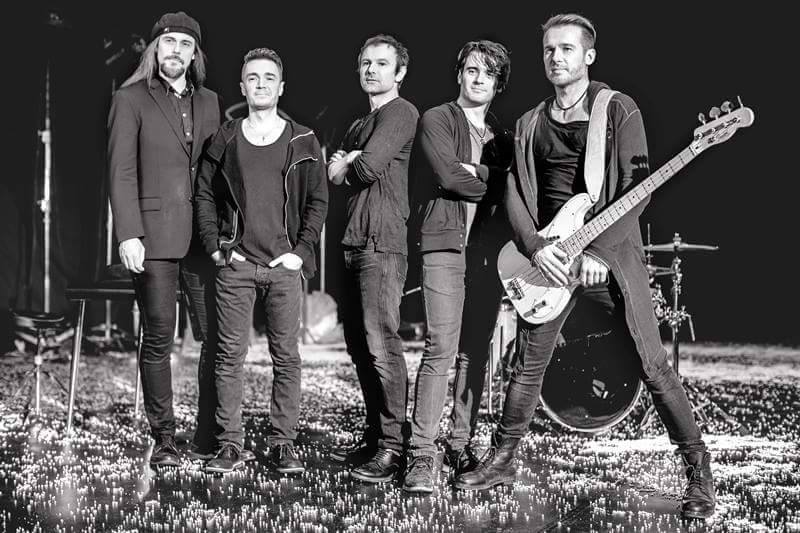

Viena iš mano mėgstamų muzikos grupių: Okean Elzy
- Keletas iš daugelio jų sukurtų kurinių video formatu:
- Keletas iš daugelio jų sukurtų kurinių audio formatu:
- Jie net planuoja pasirodyti čia Lietuvoje, Kauno Žalgirio arenoje:
- Čia yra pati muzikos grupės foto, miestas, kuriame buvo sukurta grupė (Lviv) bei šalis, kurioje randasi šis miestas:

Visą galimai reikiamą informaciją rasite čia.